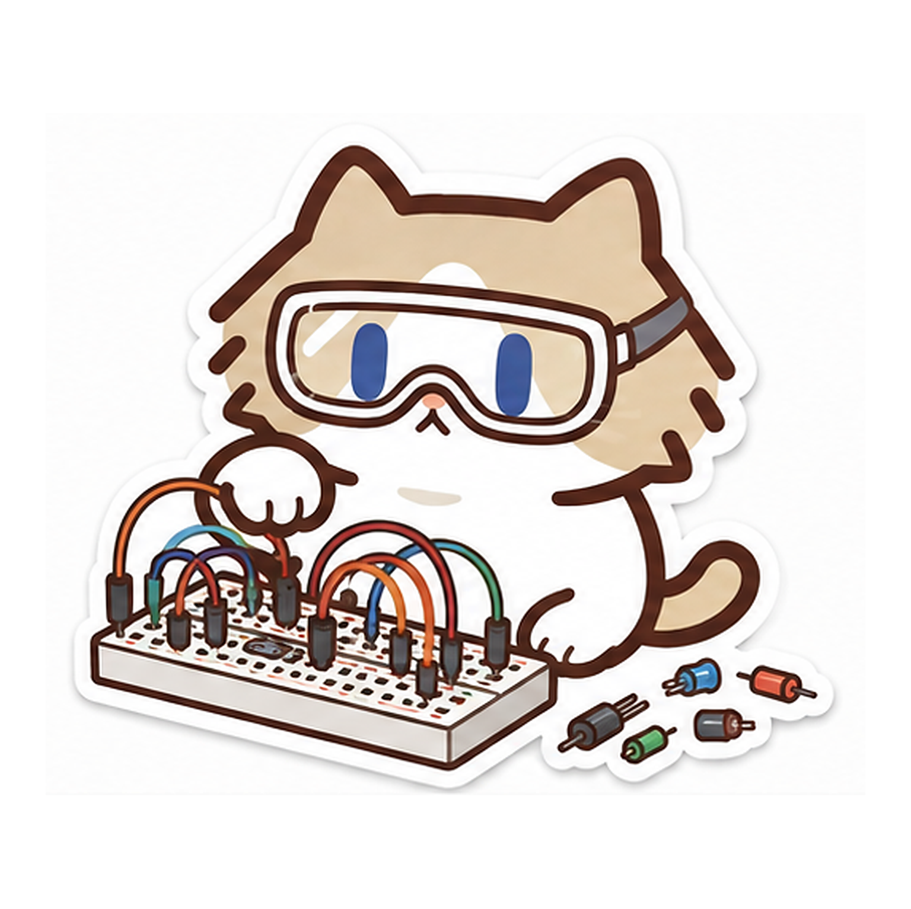

Theme 01Beyond 5G
6G Wireless
Systems
Investigating intelligent, sensing-native, and adaptive wireless architectures for the next generation of connected systems.
Towards intelligent, sensing-native 6G
I explore the foundations of future wireless systems—from self-organizing networks and integrated sensing to software-defined radio platforms.

Huazhong University of
Science and Technology
01 / Research
My research centers on 6G wireless systems, spanning ad hoc networking, integrated sensing and communication, and software-defined radio—with an emphasis on ideas that can be tested on real platforms.
Investigating intelligent, sensing-native, and adaptive wireless architectures for the next generation of connected systems.
Studying decentralized networking, dynamic topology, and resilient coordination where infrastructure is limited or unavailable.
Turning communication waveforms and feedback into sensing capabilities while jointly reasoning about both system objectives.
Building flexible radio platforms that bring signal-processing ideas out of simulation and into reproducible over-the-air experiments.
02 / About
I am a researcher at the School of Electronic Information and Communications, Huazhong University of Science and Technology. My work is focused on 6G and the convergence of communication, sensing, networking, and programmable radio.
Across ad hoc networks, integrated sensing and communication, and software-defined radio, I care about methods that work beyond controlled demonstrations—grounded in physical structure and validated through real experiments.
03 / Publications
Research shaped by real signals,
real hardware, and real environments.
IEEE VTC2026-Spring · 2026
A training-free detector that converts commodity Wi-Fi beamforming angles into a robust occupancy statistic through line-of-sight compensation, information-aware weighting, and rank-1 leakage analysis.
IEEE/CIC ICCC · 2026
A handheld 4G/5G measurement platform and physics-informed Gaussian-process pipeline for efficient, spatially continuous coverage evaluation across multiple operators.
04 / Contact